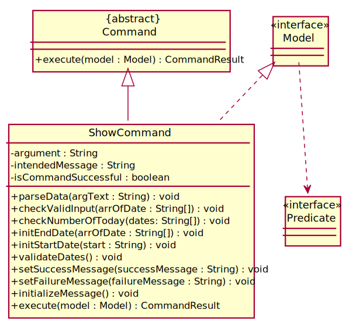

Overview
Delino is a desktop application for couriers to manage delivery tasks. The user interacts with it using a CLI, and it has a GUI created with JavaFX. It is written in Java, and has about 10 kLoC.
Summary of contributions
-
Major enhancement:
-
Added
insertcommand (Pull request #189)-
What it does: Allows the user to insert new delivery order into the Order List. The user can add an order that contains the following attributes :
-
Transaction ID
-
Name
-
Phone
-
Address
-
Email
-
Delivery Timestamp
-
Warehouse location
-
Cash on Delivery
-
Comment (Optional)
-
Type Of Item (Optional)
-
-
Justification: This is an important feature and it is a must-have. It allows user to insert multiple orders into the list.
-
-
Refactor the
listcommand (Pull request #239)-
What it does: Instead of simply displaying all the orders, the user can choose to list :
-
Delivered orders
-
Undelivered orders
-
-
Justification: The feature helps the user, as a courier, to know how many orders have to be completed and how many orders are already completed.
-
-
Added the
showcommand (Pull request #199)-
What it does: It gives a more detailed information about the orders and return orders in their lists, in the form of numbers and PieChart. The information shown is :
-
Total Earnings
-
Orders Completed
-
Orders Returned
-
A PieChart to show to the user on how many orders are completed and not completed, returned and not returned.
-
-
-
Highlights:
Ability to let user to see information based on the date(s) provided. For example, the user can enter :show2020-02-022020-09-01to see all the information about the orders that are from the date2020-02-02up to the date2020-09-01. In addition, user can show statistics about everything in all the lists or just simply showing the statistics for today. -
Credits: UI Design ideas for
showCommand from https://www.youtube.com/watch?v=UDi051XyQ-U&t=339s
-
-
Minor enhancement:
-
Code contributed: [Functional code and Test code]
-
Other contributions:
-
Project management:
-
Responsible for ensuring that the team’s code is compliant with the coding standards and in charge of defining, assigning and tracking all project tasks.
-
-
Enhancements to existing GUI:
-
Make major changes to the UI to change from Window to TabView (Pull request #318)
-
-
Documentation:
-
Community:
-
Tools:
-
Integrated a third party library (Netlify) to the project (#1708e0b)
-
-
Contributions to the User Guide
Given below are sections I contributed to the User Guide. They showcase my ability to write documentation targeting end-users. |
Insert feature
This whole section of the Insert feature can be found here. This link is provided in the event if some of the cross links are not working, as they refer to documents done by another team member
Inserting an order: insert [Done by Amos Cheong Jit Hon]
This section shows you how to use the insert Command and the relevant examples.
Whenever you have a new delivery order to make, you have to add it into your list of orders.
The insert Command is in charge of this functionality.
How to use the Insert Command
|
Orders inserted are sorted by their delivery date and time. |
Here are the steps on using the insert Command:
Step 1 : Type in the keyword insert
Step 2 : Add in the prefixes TRANSACTION_ID CUSTOMER_NAME
ADDRESS PHONE_NUMBER EMAIL
ORDER_TIMESTAMP WAREHOUSE_LOCATION CASH_ON_DELIVERY
of the delivery orders
Step 3 (Optional) : Add in the Customer comment and type of item using the prefixes [COMMENT_BY_CUSTOMER]
[TYPE_OF_ITEM]
Step 4 : Press Enter on your keyboard to see the magic!
What constitutes a valid Insert command
Here is the syntax of the insert Command :
insert tid/TRANSACTION_ID n/CUSTOMER_NAME a/ADDRESS p/PHONE_NUMBER e/EMAIL dts/DELIVERY_DATE_&_TIME w/WAREHOUSE_LOCATION cod/CASH_ON_DELIVERY [c/COMMENTS_BY_CUSTOMER] [type/TYPE_OF_ITEM]
|
|
These are the possible combinations of the insert command:
| Scenario | Command | Result |
|---|---|---|
Insert the order without a comment and no item type. |
|
You should be able to see that the order with transaction id |
Insert the order with all the order attributes including the non-compulsory ones. |
|
You should see that the order with transaction id |
|
List feature
This whole section of the List feature can be found here. This link is provided in the event if some of the cross links are not working, as they refer to documents done by another team member
Listing orders : list [Done by Amos Cheong Jit Hon]
In this section, you will learn more about the list command and how to use it.
As a courier, you would want to take a look at all the orders that you have in your list of orders regardless of the
type of orders or the order status.
The list Command will enable you to view all these orders.
How does the List Command works
Here are the steps to execute the list command:
Step 1 : Type in the keyword list.
Step 2 : If you want to simply see all your delivery and return orders.
Otherwise, please proceed to Step 3. Else, skip to Step 4
Step 3 : Provide the following [KEYWORD] : done (Show all your completed orders) or undone (Show all your
uncompleted orders)
Step 4 : Press Enter on your keyboard and see the magic!
What constitutes a valid List command
The syntax of a valid list command is as shown:
list [KEYWORD]
These are the possible combinations of the list command:
| Scenario | Command | Result |
|---|---|---|
Display all orders. |
|
Show two lists of all orders. One list for delivery orders, the other for return orders |
Display all completed orders. |
|
Show two lists of all completed orders. One list for delivery orders, the other for return orders |
Display all uncompleted orders. |
|
Show two lists of all uncompleted orders. One list for delivery orders, the other for return orders |
|
Show feature
This whole section of the Show feature can be found here. This link is provided in the event if some of the cross links are not working, as they refer to documents done by another team member
Showing statistics : show [Done by Amos Cheong Jit Hon]
This section will explain more about the show command and how to use it.
At some point of time, you would want to know how many orders have you delivered or what is your earnings for today. Therefore,
you have to use the show command to view those information.
How to use the Show command
In this section, you will learn how to use the show Command.
Here is how you can show the statistics of your orders:
Step 1 : Type show
Step 2 : If you want to see your statistics for all the orders, simply type all and skip to Step 5
Step 3 : Type today to show the statistics for today or simply type in a date
in a date format of yyyy-mm-dd
Step 4 (Optional) : Type another date in yyyy-mm-dd format to see the statistics within the date range.
This date must be after or equal to the date provided previously
Step 5 : Press Enter on your keyboard to see the magic!
|
The
|
What constitutes a valid Show Command
In this section, you will learn about the correct syntax for a valid show command and all the
different combinations of the command.
All the syntax for a valid show command is shown below:
-
showSTART_DATE[END_DATE] -
showall -
showtoday -
showDATE
|
These are the possible combinations of the show command:
| Scenario | Command | Result |
|---|---|---|
Showing all the orders statistics regardless of date. |
|
You will be brought to the Statistics tab and the statistics of all orders will be displayed to you. |
Showing the statistics for today. |
|
You will be brought to the Statistics tab and the statistics for today’s orders will be displayed to you. |
Showing the statistics for the date between today and the end date provided. |
|
You will be brought to the Statistics tab and the statistics between today’s date and
|
Showing the statistics for just the given date. |
|
You will be brought to the Statistics tab and the statistics in |
Showing the statistics within two given dates. |
|
You will be brought to the Statistics tab and the statistics for the date between |
Contributions to the Developer Guide
Given below are sections I contributed to the Developer Guide. They showcase my ability to write technical documentation and the technical depth of my contributions to the project. |
Insert feature
This whole section of the Insert feature can be found here. This link is provided in the event if some of the cross links are not working, as they refer to documents done by another team member
Insert Feature
This section, will introduce the insert feature.
In addition, it will show the expected path-execution,
the structure of the of the InsertCommand class,
structure of the InsertCommandParser class and
it will also describe the interaction of objects between the InsertCommand object
and other object classes.
What is the Insert feature
The insert feature allows the user to insert an incoming delivery order into the list using the command line.
The order consists of : Transaction ID, Name, Phone, Address, Email, Delivery Timestamp, Warehouse location, CashOnDelivery
The order also consists of two optional fields that can be added:
-
Type of Item
-
Comment for Courier
Structure of Insert feature
The following diagrams shows the overview of the InsertCommand Class Diagram:
The above class diagram shows the structure of the InsertCommand and its associated classes and interfaces. Some methods and fields are not included because they are not extensively utilised in InsertCommand; such as public static fields and getter/setter methods.
Structure of InsertCommandParser
The above class diagram shows the structure of the InsertCommandParser and its associated classes and interfaces. It describes all the class dependencies of the InsertCommandParser class. Some methods and fields are not included because they are not extensively utilised in InsertCommand; such as public static fields and getter/setter methods. As shown in the diagram above, the InsertCommandParser make use of methods from classes such as using the getValue method from the ArgumentMultimap class.
Path Execution of Insert Command
The overview of the InsertCommand Activity Diagram is shown below:

After the user calls the insert command, the code will check if the command has all the compulsory prefixes present.
The code will throw a ParseException when there are missing prefixes. After that is checked, it will check if the
new order added is a duplicate (The Order is already inserted into the application). It will throw a CommandException
when the user tries to insert a duplicate order. Otherwise, it will insert the order and prints a success message to
the user.
Interaction between objects when the Insert Command is executed
Here is the sequence diagram for the Insert Command as shown below:
The arguments of the insert command will be parsed using the parse method of the InsertCommandParser class.
The InsertCommandParser will tokenize the arguments parsed in using the tokenize method of
ArgumentTokenizer class which returns the tokenized arguments.
Using the tokenized arguments, the Parser will check if the arguments parsed in matches with the
tokenized arguments using the arePrefixesPresent method.
There are two scenarios :
-
Some compulsory prefixes are not present :
InsertCommandParser will throw a new ParseException object to the LogicManager. -
All compulsory prefixes are present in the arguments :
It will the proceed to use the getValue method of the ArgumentMultimap class to get the value of the prefix. For example, if the argument parsed in is tid/A12345, the getValue method will get the value 'A12345'. Subsequently, it will use the ParseUtil methods to get the corresponding object values and put it into the parameters of the new Order object. The order object will be put into the parameter of the InsertCommand object and this will be returned to the LogicManager class for execution.
LogicManager will call the execute() method of this InsertCommand object. In the execute() method, it will use the Model class to call hasOrder method to check for duplicates, if it is a duplicate, the order will throw a CommandException which indicates that there is a duplicate order in the OrderBook already. Else, it will successfully inserts the new order using addOrder method. Finally, it return a new CommandResult object, containing a String that indicates a successful insertion.
List feature
This whole section of the List feature can be found here. This link is provided in the event if some of the cross links are not working, as they refer to documents done by another team member
List feature
This section describes the functionality , the structure,
interactions between objects and path the path execution
of the list command.
What is the List feature
List feature allows the user to see all the orders from both Delivery Orders and Return Orders.
The user can enter list to display all the orders. Besides that, the user can also input done to display
all delivered orders and undone to display all orders that are not delivered.
Structure List feature
The structure of the List Feature is as shown below:
The above class diagram shows the structure of the ListCommand and all its associated classes and interfaces.
The ListCommand has dependencies on the Model class as it uses the two methods from it :
-
updateFilteredOrderList
-
updateReturnFilteredOrderList
There are other variables and strings not shown in this Class Diagrams as they are either static methods or variables.
Path execution of the List Command
The above activity diagram shows the logic and the path execution when the list command is executed.
There are only three correct syntax available for ListCommand:
-
list -
listdone -
listundone
The code will check if the input is one of the three mentioned above. If the input is not one of the three, it will cause the code the throw an error message to the user.
Interaction between objects during execution of List Command
The sequence diagram for the list command is shown below:
The user first calls the command list.
|
The second argument of the |
The LogicManager will call the parseCommand method of DelinoParser, which then passes the second argument into the ListCommand object. This object will then be ultimately returned to the LogicManager. Next, the LogicManager will call the execute(model) method using the ListCommand object. In this method, it wil use the Model object to call the methods : updateFilteredOrderList and updateFilteredReturnOrderList. Since in this case, the argument is empty, the predicate that is parsed to the two methods will always result to true, which means to list everything from the order book and return book. When completed, the execute(model) will return a CommandResult object to the LogicManager, indicating that the command execution is a success.
Show feature
This whole section of the Show feature can be found here. This link is provided in the event if some of the cross links are not working, as they refer to documents done by another team member
Show feature
This section describes the functionality , the structure,
interactions between objects and path the path execution of the show command.
What is the Show feature
The show feature allows the user to see the statistical information of all the orders for both Delivery Orders
and Return Orders.
There are a few ways in which the user can input to the command box to execute the show command:
-
showSTART_DATE[END_DATE] -
showall -
showtoday -
showDATE
Structure Show feature
The structure of the show feature is as shown below:

The above diagram shows all the methods and variables that the ShowCommand class is using when the command is executed. All the static methods and variables are not mentioned in this diagram. Furthermore, there are some methods and variables omitted from this diagram as it is irrelevant to the ShowCommand class.
Path execution of the Show Command
The above activity diagram shows the logic and the path execution when the show command is executed.
The main logic of the ShowCommand is to check if the number of arguments in the input besides show is one or two.
If it is neither, the code will throw an exception. If there is only one argument, the code will check if the word
provided is either all or today or simply just a DATE the value of DATE will be validated to check
if it is a valid date.
It throws an error if it is invalid. When its correct, the code will execute the input accordingly.
If the number is two arguments, it will check if the dates provided are valid or invalid date.
It throws an error for the latter. The code will then ensure that the START_DATE is before the END_DATE.
Once the input passes all the validations in the ShowCommand code,
the command will then be executed and it prints a success message to the user.
Interaction between objects during execution of Show Command
The sequence diagram for the show command is shown below:
The user first calls the command "show all".
|
It can accept either one or two arguments. |
The LogicManager will call the parseCommand method of DelinoParser, which then passes the second argument
into the ShowCommand object. Within the object, it will call the parseData method to make sense of the dates given.
After that, it returns the object to the LogicManager.
Next, the LogicManager will call the execute(model) method using the ShowCommand object.
When completed, the execute(model) will return a CommandResult object to the LogicManager, indicating that the command execution is a success.
In this case where the input is "show all", it will have a message that indicates that the command is showing all information.
Use case for insert feature
This whole section on Use case for insert feature can be found at here. This link is provided in the event if some of the cross links are not working, as they refer to documents done by another team member
Use case: UC01 - Insert an order
MSS
-
User wants to add an order.
-
User key in the order details.
-
Delino inserts the order details.
-
Delino displays order added.
Use case ends.
Extensions
-
2a. Delino detects invalid syntax from user input.
-
2a1. Delino shows an error message.
Use case ends.
-
-
2b. Delino detects the insertion of a duplicate order.
-
2b1. Delino shows duplicate order message.
-
Use case for show feature
This whole section on Use case for show feature can be found at here. This link is provided in the event if some of the cross links are not working, as they refer to documents done by another team member
Use case: UC13 - Show statistics
Preconditions: There should be a delivered order/return order in the list.
MSS
-
User wants to know about their delivery statistics.
-
User requests to see the statistics of orders or return orders.
-
Delino displays the statistics.
Extensions
-
2a. Delino detects invalid syntax from user input.
-
2a1. Delino shows an error message.
-
-
2b. Delino detecs an invalid date from user input.
-
2b1. Delino shows an error message.
-
Use case ends.
Use case for list feature
This whole section on Use case for list feature can be found at here. This link is provided in the event if some of the cross links are not working, as they refer to documents done by another team member
Use case: UC10 - Listing all orders
MSS
-
User wants to view all orders.
-
User requests to view the list of orders.
-
Delino display list of orders.
Use case ends.
Extensions
-
2a. Delino detects invalid syntax from user input.
-
2a1. Delino shows an error message.
Use case ends.
-
-
3a. Delino detects no orders.
-
3a1. Delino shows empty order list message.
Use case ends.
-
Glossary
This whole section on Glossary can be found at here. This link is provided in the event if some of the cross links are not working, as they refer to documents done by another team member
Command Prefix
| Prefix | Order Attributes | Used in the following Command(s) |
|---|---|---|
ot/ |
Order Type |
|
tid/ |
Transaction ID |
|
n/ |
Customer Name |
|
a/ |
Address |
|
p/ |
Phone Number |
|
e/ |
||
dts/ |
Delivery Date And Time |
|
rts/ |
Return Date and Time |
|
w/ |
Warehouse Location |
|
cod/ |
Cash On Delivery |
|
c/ |
Comments by Customer |
|
type/ |
Type of Item |
Manual Testing for insert
This whole section on manual testing for insert feature can be found at here. This link is provided in the event if some of the cross links are not working, as they refer to documents done by another team member
Inserting an order
-
Insert a minimum of 2 orders
-
Insert command format:
inserttid/TRANSACTION_IDn/CUSTOMER_NAMEa/ADDRESSp/PHONE_NUMBERe/EMAILts/DELIVERY_DATE_&_TIMEw/WAREHOUSE_LOCATIONcod/CASH_ON_DELIVERY[c/COMMENTS_BY_CUSTOMER][type/TYPE_OF_ITEM] -
Test case:
inserttid/9876543210n/John Doea/Blk 572 Hougang st 51 #10-33 S530572p/98766789e/johndoe@example.comts/2020-02-20 1300w/Yishuncod/$4
Expected: Inserts an order with the above details to the list and displayed on the GUI -
Test case:
inserttid/1023456789n/Amos Cheonga/Blk 572 Hougang st 51 #11-37 S530572p/9001 0019e/amoscheong@example.comts/2020-03-10 1650w/Marsilingcod/$5c/Leave it at the risertype/glass
Expected: Inserts the order to the list, including the item type and the order comment -
Test case: Invalid Syntax
Expected: No order is added. Error details shown in the response message. A help message displayed for user to insert accordingly. Status bar remain unchanged -
Test case: Insert order with existing Transaction ID in list
Expected: An error will occur and a message will be displayed, stating that order with duplicate ID cannot be inserted into the list
-
Manual Testing for list
This whole section on manual testing for list feature can be found at here. This link is provided in the event if some of the cross links are not working, as they refer to documents done by another team member
List orders
-
List all the delivery orders for the user. The type of orders to be listed is dependent on the command input from the user
-
Test case:
list
Expected: List all the delivery orders, showing all completed and uncompleted orders. -
Test case:
listdone
Expected: List all completed delivery orders. -
Test case:
listundone
Expected: List all uncompleted delivery orders. -
Test case:
listANY_WORD_OTHER_THAN_UNDONE_AND_DONE
Expected: An error will occur, a message will appear in the response box, indicating an invalid list command
-
Manual Testing for show
This whole section on manual testing for show feature can be found at here. This link is provided in the event if some of the cross links are not working, as they refer to documents done by another team member
Show
-
Opens a window which shows the statistics of the current lists of orders. It displays information such as earnings made, orders delivered and orders returned (Including a PieChart).
-
Test case:
showall
Expected: All statistical information of all the orders shown in the statistics tab. -
Test case:
showtoday
Expected: All statistical information today shown in the statistics tab. -
Test case:
showtoday2020-12-03
Expected: All statistical information between the dates shown in the statistics tab. -
Test case:
show2020-12-03
Expected: All statistical information for the given date shown in the statistics tab. -
Test case:
show2020-12-032021-01-01
Expected: All statistical information within the dates shown in the statistics tab. -
Test case: Invalid syntax
Expected: An error will occur and the response box will show an error message.
-